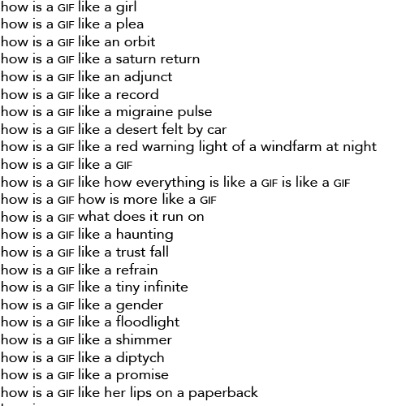

How Is A GIF
The GIF disperses by viral mutation. It is interchangeable, exchangeable. It originates from anywhere, adapts to mean anything. But it doesn't stay where it's put. Anonymous, cheap, ephemeral, promiscuous, it harnesses the power of spam and histories of broadsides or wheat-pasting. It travels like gossip; not-being-taken-seriously is part of its strategy. The GIF questions value and beckons with an implicit logic: "I'm worth sharing." GIF poetry repurposes the digital medium's distributive, recursive power to mobilize the lyric in new zones. I am inspired by artists like Barbara Kruger, whose public texts co-opt advertising's forms and formulas to those same ends. It was Kruger who famously said, "Do you know why language manifests itself the way it does in my work? It's because I understand short attention spans." The GIF can challenge where language belongs and what it can withstand. Furthermore, its unstable quality makes a possible home for other kinds of precarity: social, political, existential. It harbors tiny infinities and secret intensities that remain invisible to more grandiose forms.